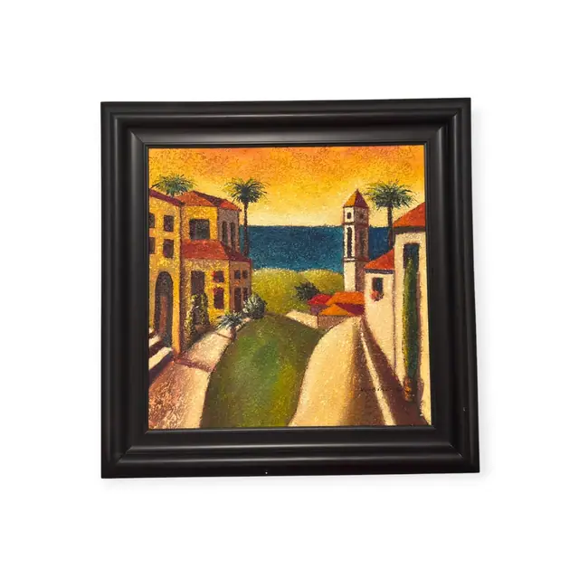
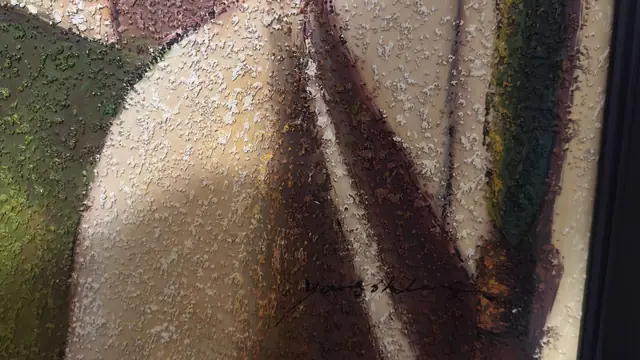
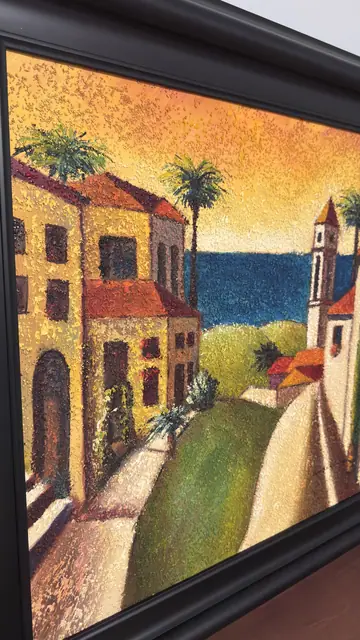
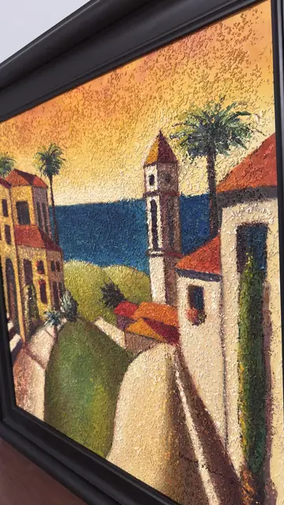

Paintings & Prints
Mediterranean Hillside Village at Sunset, Signed, Framed
Unknown · late 20th / early 21st century
Price Upon Request




About the Item
A stylised Mediterranean village climbs a hill above a deep cobalt sea, with terracotta roofs, a slender campanile and two palms silhouetted against a saffron sky. The paint is built up in dense, granular impasto: the whole surface is stippled with raised flecks that catch the light, and the sunset sky is dotted with hundreds of tiny highlights. Forms are simplified into flat geometric planes - wedge-shaped walls, a pale road, and olive-green banks - so the picture reads as much as pattern as landscape. Palette is dominated by golden ochre, burnt orange, cream and a single band of cobalt for the water. Medium: oil on canvas. Signed lower centre-left, on the pale road. Condition: No visible damage, tears or losses; heavy impasto is intact. Some raking-light glare on the textured surface in the detail shots.
Details
- Creator:
- Unknown
- Creation Year:
- late 20th / early 21st century
- Dimensions:
- Height: 39.5 in (100.33 cm)
Width: 38.5 in (97.79 cm)
outside of frame - Medium:
- oil on canvas
- Period:
- 21St
- Condition:
- Offered in the condition shown in the photographs.
- Reference Number:
- VO-157
- Documentation:
- no certificate or label photographed